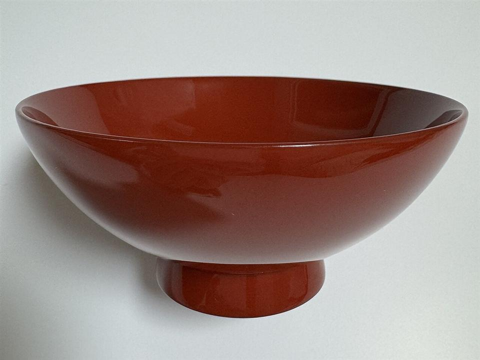

What is it?
Urushi lacquerware means objects coated with lacquer, a natural finish made from the sap of the urushi tree. The sap is collected from the tree in a similar way to rubber. (FCCJ, 2021)
One place that makes it is Jōbōji in Iwate. There, a wooden base is covered in many layers of lacquer and polished, which makes it strong and water-resistant. (Kogei Japan, n.d.)
History
Lacquerware was once a major part of Japanese craft. Before 1850, Japan made and used about 2,000 tons of lacquer sap a year. (FCCJ, 2021)
In Jōbōji, the tradition is said to have started with temple monks who made lacquered items for their own meals. Later, people in nearby villages made them too. (Kogei Japan, n.d.)
Why is it endangered?
By 2019, Japan produced only about 30 tons of lacquer sap. Plastic replaced many lacquer items, and makers often have to use imported lacquer of lower quality. (FCCJ, 2021)
When one part of the process disappears, such as collecting the sap, the whole craft is at risk.
How you can help
- Choose a lacquer bowl or lunchbox that lasts for years instead of a plastic one.
- Look for pieces made with lacquer from Japan, and ask where it came from.
- Learn about projects that plant new urushi trees, such as Kogei no Mori (“Craft Forest”). (FCCJ, 2021)
Quick facts
- Made in many parts of Japan, including Jōbōji in Iwate
- Before 1850: about 2,000 tons of sap a year
- 2019: about 30 tons
Sources
- A matter of survival, FCCJ (Foreign Correspondents’ Club of Japan), 2021
- Joboji Lacquerware, Kogei Japan, n.d.